사출(프레스)금형산업기사 (2016-03-06 기출문제)
1과목: 금형설계
1. 다음 압축 가공 방법 중 소재의 단면적을 확대하면서 제품을 성형하는 방식이 아닌 것은?
- 압인
- 업세팅
- 후방 압출
- 밀폐 단조
(정답률: 71%)

2. 판 두께 2mm인 경질 황동판에 탄소강의 공구를 사용하여 뚫을 수 있는 최소 블랭킹 지름(mm)은? (단, 황동판의 전단 저항 : 35kg/mm2, 탄소강의 압축강도 : 200kg/mm2이다.)
- 0.3
- 0.7
- 1.4
- 2.1
(정답률: 68%)
3. 가공할 소재의 두께 t=2mm이고 압축강도 σp=150kgf/mm2이며 전단 강도가 τ=40kgf/mm2일 때 펀치의 최소 직경은?
- 2.14mm
- 3.14mm
- 4.14mm
- 5.14mm
(정답률: 41%)
4. 스트립의 소재 이송을 위해 다이레벨에서 이송레벨까지 올려주면서 동시에 스트립의 이송 안내 기능까지 겸하고 있는 금형 부품은?
- 바 리프터
- 스톡 리프터
- 가이드 레일
- 가이드 리프터
(정답률: 80%)
5. 블랭크를 생산하기 위하여 블랭킹 가공을 하였더니 블랭크가 낙하하지 않고 떠오르는(블랭크 업) 현상이 발생하였을 때의 방지 대책으로 틀린 것은?
- 펀치에 셰더핀을 설치한다.
- 펀치의 반경값을 크게 한다.
- 클리어런스 값을 작게 한다.
- 펀치에 에어 벤트(공기구멍)를 설치한다.
(정답률: 48%)
6. 다음 중 전단가공에서 전단면 형상에 가장 큰 영향을 주는 것은?
- 전단력
- 측방력
- 소재 경도
- 클리어런스
(정답률: 71%)
7. 블랭킹 다이 설계 시 다이세트의 사용 목적으로 틀린 것은?
- 금형 수명이 길어진다.
- 금형 정밀도가 높아진다.
- 금형 운반, 관리가 용이하다.
- 금형, 제작비를 줄일 수 있다.
(정답률: 72%)
8. 판 또는 용기의 가장자리 부분에 원형 단면의 테두리를 말아 넣은 가공방법은?
- 벌징
- 벤딩
- 비딩
- 컬링
(정답률: 84%)
9. 굽힘 가공 시 스프링백(Spring Back)이 증가하는 원인이 틀린 것은?
- 굽힘 반경이 클수록
- 굽힘 각도가 클수록
- 클리어런스가 클수록
- 가압속도가 고속일수록
(정답률: 61%)
10. 드로잉작업에서 코너 R이 있는 원통용기를 드로잉할 때 필요한 블랭크 직경을 구하는 식은? (단, D : 블랭크 직경, d : 드로잉 직경, h : 드로잉 깊이, rp : 펀치 코너 반경이다.)
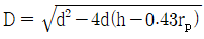
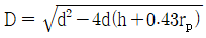
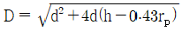
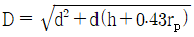
(정답률: 63%)
11. 금형온도에서 제어시스템 중 금혈 가열 히터의 용량을 구하는 공식으로 옳은 것은? (단, P : 히터용량(kW), t1 : 상승희망온도(℃), t2 : 대기의 온도(℃), M : 제어부의 금형중량(kg), T : 희망상승시간(h), C : 금형재료의 비열, η : 히터 효율(%)이다.)
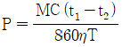
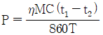
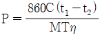
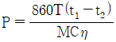
(정답률: 50%)
12. 사이드 코어 또는 분할 코어를 후퇴시킬 때만 사용하는 언더컷 처리 기구로서 구조가 간단하지만 인발력과 습동 거리를 크게 할 수 없고, 정확성이 부족한 언더컷 처리 기구는?
- 판 캠
- 유압실린더
- 스프링 구조장치
- 도그레그캠(dog leg cam)
(정답률: 54%)
13. 결정성 수지에 속하며 유백색, 불투명 또는 반투명으로 범용 수지 중에서 가장 가볍고(비중 0.9), 폴리스틸렌에 비하여 표면 광택이 우수하고 내약품성이 좋으며, 내충격성이 강한 수지는?
- PA
- PP
- PVC
- PMMA
(정답률: 65%)
14. 사출 금형에서 게이트 위치 선정에 대한 설명으로 틀린 것은?
- 웰드라인이 생기기 쉬운 곳에 설치한다.
- 가급적 성형품의 가장 두꺼운 부분에 설치한다.
- 상품의 가치상 가능한 눈에 띄지 않는 곳에 설치한다.
- 각 캐비티의 말단까지 동시에 충전할 수 있는 위치에 설치한다.
(정답률: 81%)
15. 사출성형 작업 시 플래시 방지 대책과 가장 거리가 먼 것은?
- 사출 압력을 낮춘다.
- 수지 온도를 높인다.
- 형 조임력을 높인다.
- 받침판을 두껍게 한다.
(정답률: 60%)
16. 다음 중 성형품 설계에서 여러 개의 구멍이 있을 때 적합한 구멍의 피치는?
- 구멍 지름의 0.5배
- 구멍 지름의 1배
- 구멍 지름의 1.5배
- 구멍 지름의 2배
(정답률: 71%)
17. 다음 중 2매 구성 금형에서 게이트 절단이 용이하여 자동 성형이 용이한 게이트로 가장 적한한 것은?
- 팬 게이트
- 표준 게이트
- 터널 게이트
- 핀 포인트 게이트
(정답률: 68%)
18. 사출 금형에서 받침판을 지지하고 성형품을 빼낼 때, 이젝터 플레이트가 움직일 수 있는 공간을 만들어주는 부품은?
- 스톱 핀(stop pin)
- 로케이트 링(locate ring)
- 스프루 부시(sprue bush)
- 스페이서 블록(spacer block)
(정답률: 85%)
19. 다음 그림과 같이 덮개형상의 성형품에 일반적인 빼기 구배를 적용할 때, 다음 중 가장 적합한 것은? (단, H가 100mm 이상인 경우이다.)
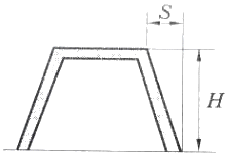
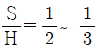
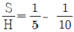
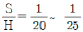
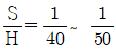
(정답률: 59%)
20. 사출 용적이 112cm3이고 용융 수지의 밀도가 1.⑤g/cm3인 사출기의 사출량(g)은 약 얼마인가? (단, 사출 효율은 86%이다.)
- 91
- 101
- 118
- 138
(정답률: 63%)
2과목: 기계가공법 및 안전관리
21. 다음 중 분할법의 종류에 해당하지 않는 것은?
- 간접 분할법
- 단식 분할법
- 직접 분할법
- 차동 분할법
(정답률: 55%)
22. 주철을 저속으로 가공할 때 생기는 칩의 형태는?
- 균열형
- 열단형
- 유동형
- 전단형
(정답률: 59%)
23. 드릴링머신으로 구멍 가공 작업을 할 때 주의 사항으로 틀린 것은?
- 드릴은 흔들리지 않게 정확하게 고정해야 한다.
- 크기가 작은 공작물은 손으로 잡고 드릴링한다.
- 구멍 가공 작업이 끝날 무렵에는 이송을 천천히 한다.
- 드릴을 고정하거나 풀 때는 주축이 완전히 정지된 후 작업한다.
(정답률: 89%)
24. 다음 중 공작기계의 일반적인 구비 조건으로 틀린 것은?
- 가공 능률이 우수할 것
- 가공물의 공작 정밀도가 높을 것
- 사용이 간편하고 운전 비용이 저렴할 것
- 기계의 강성도가 작고 가격이 고가일 것
(정답률: 90%)
25. 수평밀링과 유사하나 복잡한 형상의 지그, 게이지, 다이 등을 가공하는 소형 밀링 머신은?
- 공구 밀링머신
- 나사 밀링머신
- 만능 밀링머신
- 모방 밀링머신
(정답률: 66%)
26. 브로칭머신에서 브로치 공구를 사용하여 가공하기에 가장 적합하지 않은 것은?
- 키홈
- 암나사
- 스플라인 홈
- 세그먼트 기어의 치형
(정답률: 70%)
27. 측정자의 미소한 움직임을 광학적으로 확대하여 측정하는 측정기는?
- 미니미터
- 옵티미터
- 공기 마이크로미터
- 전기 마이크로미터
(정답률: 67%)
28. 선반 가공에서 테이퍼를 가공하는 방법으로 적합하지 않은 것은?
- 맨드릴을 이용하는 방법
- 총형 바이트를 이용하는 방법
- 복식 공구대를 경사시키는 방법
- 테이퍼 절삭 장치를 이용하는 방법
(정답률: 62%)
29. 옵티컬 패럴렐을 이용하여 마이크로미터의 평행도를 검사하였더니 백색광에 의한 적색 간섭 무늬의 수가 앤빌에서 2개, 스핀들에서 4개였다. 마이크로미터의 평행도는 약 얼마인가? (단, 측정에 사용한 빛의 파장은 0.32μm이다.)
- 1μm
- 2μm
- 4μm
- 6μm
(정답률: 38%)
30. 연삭숫돌에 쓰는 연삭 입자의 종류는 천연 입자와 인조 입자가 있다. 인조 입자에 해당하는 것은?
- 사암(sandstone)
- 석영(quartz)
- 에머리(emery)
- 산화알루미늄(Al2O3)
(정답률: 77%)
31. 다음 중 리머 작업과 드릴 작업과의 관계에 대한 설명으로 적합한 것은?
- 리머 작업을 위한 드릴 가공의 여유는 0.2~0.3mm가 적당하다.
- 드릴의 직경과 리머의 직경은 동일하여야 한다.
- 그릴의 직경과는 관계없이 리머 가공은 정밀한 가공이 된다.
- 드릴의 직경보다 리머의 직경이 작은 것을 사용하여야 정밀한 가공이 된다.
(정답률: 66%)
32. 가공물을 양극(+)으로 하여 전해액 속에서 전류를 통전하여 전기에 의한 화학적인 작용을 이용한 가공법은?
- 전해연마
- 액체호닝
- 레이저가공
- 초음파가공
(정답률: 82%)
33. 밀링머신 가공에서 하향절삭(내려깍기)의 장점에 해당되는 사항은?
- 기계의 강성이 낮아도 무방하다.
- 절삭력이 하향으로 작용하므로 공작물의 고정이 유리하다.
- 절입할 때, 마찰력은 적으나 하향으로 충격력이 작용한다.
- 가공물의 이송과 공구의 회전이 서로 다른 방향으로 작용하므로 백래시 제거장치가 필요치 않다.
(정답률: 67%)
34. 내면연삭기의 연삭방식이 아닌 것은?
- 가공물과 연삭숫돌에 회전운동을 주어 연삭하는 방식
- 공작물을 테이블에 고정시키고, 테이블을 회전시키는 방식
- 센터리스 연삭기를 이용하여 가공물을 고정하지 않고 연삭하는 방식
- 가공물은 고정시키고, 연삭숫돌이 회전운동 및 공전운동을 동시에 진행하는 방식
(정답률: 45%)
35. 다이얼 게이지의 측정오차와 관계없는 것은?
- 눈금
- 시차
- 측정력
- 온도변화
(정답률: 51%)
36. 선반 작업에 대한 설명으로 옳은 것은?
- 선반 작업에서는 탭(tap)을 사용하여 나사를 깍는다.
- 바이트의 자루는 길게 하여 작업하는 것이 훨씬 능률적이다.
- 절단작업은 외경절삭에 비하여 절삭속도, 이송, 절삭깊이 등을 적게하여 가공한다.
- 척(chuck)작업에서 앵글 플레이트(angle plate)를 사용하면 정확한 작업을 할 수 있다.
(정답률: 59%)
37. PTP(Point to point) 제어라고도 하며, 드릴작업이나 펀칭 작업등과 같이 공작물의 지정된 위치에 공구가 도달되는 것만이 요구되는 가공에 사용하는 NC제어방식은?
- 곡선절삭제어
- 윤곽절삭제어
- 위치결정제어
- 직선절삭제어
(정답률: 81%)
38. 나사식 보정장치, 현미경을 사용한 광학장치, 표준 봉게이지 또는 다이얼게이지, 전기계측장치 중에서 선택한 것을 이용하여 테이블과 주축대의 위치를 결정하므로 2~10μm의 높은 정밀도로 가공할 수 있는 보링머신은?
- 수직 보링머신
- 수평 보링머신
- 정밀 보링머신
- 지그 보링머신
(정답률: 50%)
39. 선반의 규격 표시 방법으로 옳은 것은?
- 기계의 중량
- 모터의 마력
- 바이트의 크기
- 배드 위의 스윙
(정답률: 74%)
40. ø13이하의 작은 구멍 뚫기에 사용하며 작업대 위에 설치하여 사용하고, 드릴 이송은 수동으로 하는 소형의 드릴링머신은?
- 다두 드릴링머신
- 직립 드릴링머신
- 탁상 드릴링머신
- 레이디얼 드릴링머신
(정답률: 77%)
3과목: 금형재료 및 정밀계측
41. 그림과 같이 형상 및 위치 정도를 측정할 때 측정 대상으로 가장 적합한 것은?
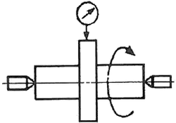
- 평행도
- 평면도
- 직각도
- 흔들림
(정답률: 73%)
42. 마이크로미터를 이용한 측정법은 다음 중 어느 것에 속하는가?
- 절대 측정
- 비교 측정
- 간접 측정
- 직접 측정
(정답률: 76%)
43. 선반 베드 진직도 검사시 0.02mm/m의 눈금을 가진 길이 200mm의 수준기가 한 위치에서 다음 위치로 옳기니 3눈금 이동하였다. 이 때 경사(기울기)는 몇 초 변동이 되는가?
- 약 4초
- 약 12초
- 약 20초
- 약 16초
(정답률: 69%)
44. 0.01mm 보통형 다이얼 게이지의 확대 방식은?
- 레버식
- 기어식
- 나사식
- 광학식
(정답률: 56%)
45. 한계 게이지와 같은 용도로 사용할 수 있는 마이크로미터로 가장 적합한 것은?
- 기어 마이크로미터
- 그루브 마이크로미터
- 디지털 마이크로미터
- 다이얼게이지 부착 마이크로미터
(정답률: 67%)
46. 다이얼게이지에서 스핀들이 들어갈 때와 나올때의 양 방향에 대하여 다이얼게이지의 읽음값이 참값으로부터 어긋난 양의 값을 의미하는 것으로 기차(器差)라고도 하는 것은?
- 인접 오차
- 반복 정밀도
- 되돌림 오차
- 지시 오차
(정답률: 48%)
47. 기어의 치형 오차 측정법의 종류가 아닌 것은?
- 기초원판식
- 피치원판방식
- 기초원조절방식
- 피치좌표방식
(정답률: 60%)
48. 다이얼 게이지에서 눈금판의 원주를 200 등분하여 눈금 간격이 2mm가 되도록 하려면 바늘의 반지름 r은 약 몇 mm 정도가 가장 적당한가?
- 63.7
- 72.8
- 80.4
- 127.3
(정답률: 34%)
49. 오토콜리메이터와 함께 원주 눈금의 정도를 확인하는데 가장 적합한 것은?
- 클리노미터
- 요한슨식 각도게이지
- 분할판
- 폴리곤 프리즘
(정답률: 62%)
50. 테일러의 원리를 적용하는 게이지로 거리가 먼 것은?
- 원통형 플러그 게이지
- 평형 플러그 게이지
- 나사 피치 게이지
- 링 게이지
(정답률: 50%)
51. 다음 중 열경화성 수지는?
- 멜라민수지
- 초산비닐수지
- 폴리아미드수지
- 폴리에틸렌수지
(정답률: 71%)
52. 순철의 변태에서 α-Fe이 γ-Fe로 변화하는 동소변태는?
- A1 변태
- A2 변태
- A3 변태
- A4 변태
(정답률: 67%)
53. 알루미늄이 공업재료로 사용되는 특성의 설명으로 틀린 것은?
- 무게가 가볍다.
- 열전도도가 우수하다.
- 소성가공성이 우수하다.
- 연강보다 비강도가 작다.
(정답률: 72%)
54. Fe-C 평형상태도에는 3개의 불변점(invariant point)이 있다. 이에 해당되지 않는 것은?
- 공정점
- 공석점
- 포정점
- 포석점
(정답률: 69%)
55. 강도와 탄성을 요구하는 스프링 및 와이어(wire)에서 많이 사용되는 조직은?
- 펄라이트(pearlite)
- 소르바이트(sorbite)
- 마텐자이트(martensite)
- 오스테나이트(austenite)
(정답률: 51%)
56. 초소성을 얻기 위한 조직의 조건이 아닌 것은?
- 모상입계는 고경각인 편이 좋다.
- 결정립의 모양은 등축이어야 한다.
- 모상입계가 인장 분리되기 쉬워야 한다.
- 결정립의 크기는 수 μm 이하 이어야 한다.
(정답률: 50%)
57. 열간 금형용 소재로 가장 적당한 것은?
- SM15C
- SM50C
- STD61
- SS400
(정답률: 64%)
58. 다음 중 강자성체가 아닌 것은?
- Ni
- Mn
- Co
- Fe
(정답률: 58%)
59. 탄소강에 함유된 황을 제거하려면 어떤 원소를 첨가하여야 하는가?
- P
- Ni
- Al
- Mn
(정답률: 78%)
60. 일반적인 열처리에서 뜨임(tempering)의 주목적을 설명한 것으로 옳은 것은?
- 연화가 주목적이다.
- 경도를 얻는 목적으로 한다.
- 인성을 부여하기 위한 목적이다.
- 표준화된 조직을 얻는 목적으로 한다.
(정답률: 65%)